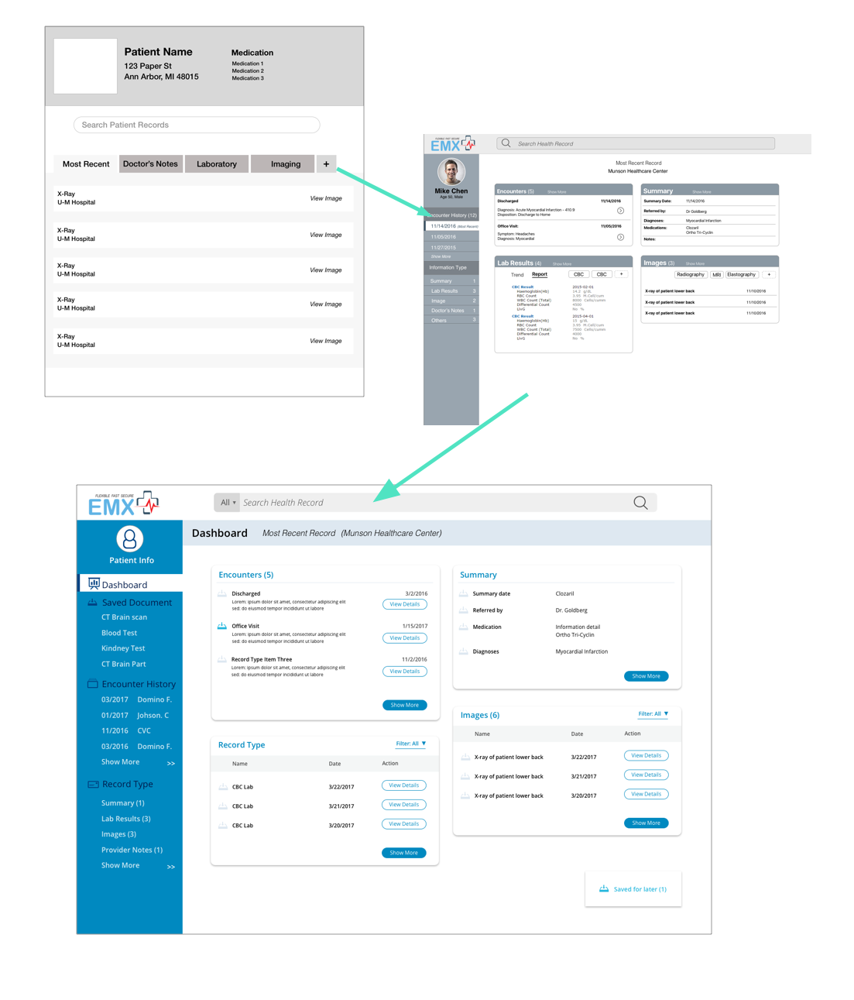

Contextual Inquiry
Learning About Our Users
Our first step in designing EMX was to understand our users – medical practitioners. Because our team did not have any domain knowledge in this area, we felt it would be crucial for us to conduct thorough user research during this phase. To do so, we employed contextual inquiry, a qualitative data analysis process to discover our users’ needs and frustrations. This process entailed conducted numerous interviews our users, followed by performing a qualitative analysis of our interview findings called building an affinity wall – a hierarchical diagram in which similar notes are grouped into high level statements.

What We Learned
By building the affinity wall, our team made several key discoveries about our users in relation to EMR systems and their workflows.
-
Records come in many types
Patient records came in many different formats depending on where they are from. Some examples include a doctor’s note from general visit which is plain text, a tabular list of results from a blood test, or an image from a CT scan.
-
Workarounds are needed
Patient files which come from other EMR Systems are given a generic description leading to excessive guesswork to find specific records. Additionally, Images and scanned documents can arrive in an unusable quality.
-
Visitors are Welcomed
Outside records are vital in a doctor’s work, many of our interviewees estimated that over 50% of their patients come from outside hospitals and medical offices.
-
One side does not fit all
Depending the specialty, every doctor sees different types of records as “important”. A general medicine doctor would find a summary important, but a cardiologist would rather see a blood cell count.
-
Information overload
Current EMRs have too many functions that our interviewees thought were unnecessary for their day-to-day. Many memorize specific steps, and find it confusing wandering outside of those steps.
-
Don't Make me Type
Many of our interviewees voiced dislike for typing into their current EMR systems. Several interviewees preferred to voice records to dictate notes.
Comparative Analysis
Who Else is Playing
After learning more about our users, we wanted to know more about other companies working on solutions to the same problem. We put together a comparative analysis 2 x 2 matrix where we evaluated a set of common features of direct competitors. During this step, we also looked at analogous systems, namely other products that preformed their own data aggregation, to gather ideas about how similar functions in EMX could potentially be designed.

Personas & Scenarios
Putting our Research Together
Before proceeding we the design phase, our team synthesized our qualitative research into a persona and journey map artifacts which we both gave as deliverable to our client, and used as reference during later steps of our design process.
Identifying Audience Subgroups
Our personas were based on our research capture three distinctly different segments of our audience. These helped us visualize the different needs of sub-groups in a more concrete way. In particular, identifying different personas in regards comfort with technology reminded us that we should design UI to be clear and simple but also include some expert shortcuts for more tech-oriented users.


Visualizing Workflows
As our final user research deliverable, our team put together a user journey map in which we mapped out the phases a user goes through whilst attempting to access outside medical records. The exact steps taken and the frustrations users had each one were determined at each phase. I found this exercise particularly interesting because at this point, our team had generated a ton of research notes and this task distilled it down into more concise terms.
Credit for creating the graphic below goes to my teammate Tianshi Wang.

Introducing EMX Systems
A Solution to the Health Record Exchange Problem
EMX Systems has a vision of connecting the health information between providers in order to eliminate the inefficiencies and costs that come with current methods of moving health information. EMX aims to provide an efficient, centralized location in which doctors can find all of their patients records, and make decisions with complete information, thereby eliminating the costs of waiting for information.
Dashboard
View patient’s latest records at a glance

Holding onto Records
save specific documents to print or reference later

Compare Different Records
Quickly comparison two records to check a patient’s recovery progress

Dashboard Customization
Dashboard can be customized to fit record types and individual workflows.


Ideation & Wireframing
Sketching Before Sketch
Before creating anything on a computer, our team first created our own wireframes which we brought used to build one unified wireframe in a whiteboard. I found approach very effective because it encouraged our team to share what our own separate initial ideas of what EMX should look like. In doing so, our discussion enabled our team to form a unified vision how EMX should look and behavior.
Putting the Patient first
During the early wireframing stages, creating a feed in which the users could view their patient’s records at a glance was something that I strongly advocated for. I hypothesized that our users would find the latest records about patient most useful because our interviewees suggested that patients would come mentioning something that happened in another encounter. I based this hypothesis off our research. Several of our interviewees had mentioned that patients coming to see them and mention something done to them during a recent encounter but didn’t know the term describe what happened.
"Several of our interviewees had mentioned that patients coming to see them and mention something done to them during a recent encounter but didn’t know the term describe what happened."
In the initial stages, the dashboard was depicted as single feed but this evolved soon multiple. Discussions about this aspect of EMX lead to a reminder that different doctors value different information differently, and it would be key for use to separate the different types of records. As such, the design of the dashboard evolved into several cards, which display different types of records.
Goal-Oriented Functions
We spent a lot of time attempting to understand the way doctors use the information they retrieve. During our initial prototype, we made a flawed assumption that our users would open a record to read it. After showing the prototype to users, we learned this was simply not true. Depending what type of information is into the record, our users used the information differently. This lead our team to investigate further, and held a meeting with one of our interviewees, who clarified our misconceptions. While not exhaustive, we generalized three key ways that doctors use different types of records.
- Review: Checking record made by another practitioner to understand the results of their findings
- Comparison: Looking at 2+ records of the same type to figure out the difference between them
- Reference: Pulling together multiple records of the different types to get a complete understanding of a patient’s status
Reviewing records was pretty clear, but we still needed answer to how we could allow our users to make comparisons and or reference multiple different types of records. To do so, we looked back at our comparative analysis with our users in mind. To do comparison, we ultimately look inspiration how from many shopping websites did their comparison.
Tailor-made Experience
One of our goals when designing EMX was to design a system which catered to the workflow of our users. As per our research, different doctors found different record types important, and we wanted to meet that need. Our attempt at creating is feature revolved around a customization button, but that button was hotly debated and moved around frequently during different prototype iterations.

Ultimately, the functionality ended up being tucked into the “see more” section of the interface. This decision was initially tough to make but when we referred back to our interviews, we found an off-hand comment from out interviewees which we overlooked which answered some of our concerns. The interviewee mentioned that “once a doctor figures their workflow, it will become very repetitive”.
Visual and UI Guidelines
Shaping EMX's Look
We developed a color and typographic guide for our client’s development to reference, as well as a through UI library to ensure a consistent look during development.


Putting it Together

Usability Testing
Listening to Our Users
Since we were designing for such a specialized audience, we felt that usability testing with our hi-fi prototyping was important to validate our decisions and test assumptions we may have made. It was fortunate that we did so, because we discovered several changes we had to make based on our testing.
Language Differences
We learned from testing that some of the terms we used had be modified because they held specific meanings in our users’ domain. In our initial prototype, we used the term “history” as label a list of encounters it turned out that it was the wrong word to use. One user said, “When I see the word history, I think of the history of this patient’s diagnosis.” It turned out our label was confusing users!
“When I see the word history, I think of the history of this patient’s diagnosis.”
-Interviewee
Once this discovery was made, our team had quick meeting and changed the label to “encounter history”, which was much better received when shown to users.

My Sort is Different Than Your Sort
Our team made the assumption that doctors would look for a specific imaging based on name. When we showed users the prototype, we learned that this was not true. In practice, images are loaded in EMR systems with distinct enough titles to search by name. Our users preferred to search for medical imaging related documents via name of the image type (e.g. CT Scan, Chest X-ray, Lower Back X-ray).
To accommodate for this discovery, the filter feature in EMX was redesigned to allow filtering by different types.
Outcome
Our client was very satisfied with our final results. After some minor visual tweaks, we sent our client our final deliverables, which included a visual identity guide, a UI library, and working interactive prototype.